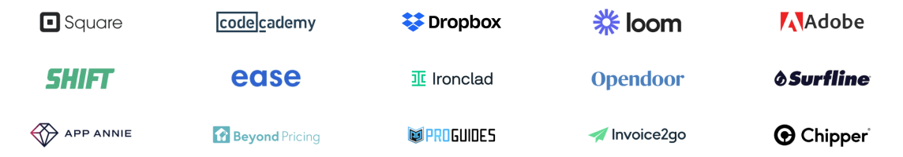

In-context user research that's fast and reliable.
Ensure user research happens early and often with Sprig's targeted microsurveys, video questions, and more.
Why Sprig?
Product 
Customers 
Resources 
Plans
Ensure user research happens early and often with Sprig's targeted microsurveys, video questions, and more.

Trusted by the world's most innovative companies
Modern product teams move fast, but learning from customers takes a ton of time, effort, and energy.
So teams often rush user research or skip it altogether, causing products and features to miss the mark.
Sprig makes it possible to obtain qualitative insights at the speed and scale of analytics